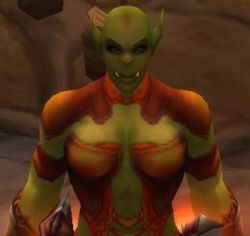

Guildes
Clan DeerAntlers
Ärcana
 Age : 8
Age : 8
Sexe : Femme
Race : Mort-vivant
Faction : Horde
Formation : Mage
Description : Ärcana, jeune réprouvée de 8ans, morte le matin de son anniversaire
Ärcana est une jeune humaine devenue réprouvée par la volonté de son père paladin. Elle a aussi, par cette voie, acquit les pouvoirs des mages, qu'elle ne sais maîtriser correctement sans provoquer de catastrophe.
Sa passion: les chevaux
Plus d'infos sur Ärcana >>>
Lire les 3 récits de Ärcana >>>
Darzag
Age : 62Sexe : Homme
Race : Orc
Faction : Horde
Formation : Chaman
Description : Frostwolf ...
Le nom du clan dans lequel je vis le jour. On ne quitte jamais un clan, même quand on en fonde un autre.
L'appel se fit sentir, cela faisait plusieurs saisons que Nialee s'en était allé, l'enfant nul ne sait ce qu'il en advint. Je pleurait plus à ce oment là, le vide s'était fait en moi, et le grand cerf me parut alors :
"La poussière qu'il avait ramassée au préalable s'écoulait lentement entre ses doigts alors que l'orc plongeait de plus en plus profondément dans sa transe. Le vent se levait et l'emportait en l'air formant peu à peu un petit nuage.
Darzag cru rouvrir les yeux, et vit le nuage d'un rouge ocre comme le décor qui l'entourait. Mais le nuage semblait se mouvoir à l'infini pour arriver à former une silhouette. Et de cette dernière il crut entendre des sons imperceptibles qui se tranformèrent au fur et à mesure en parole
"Darzag ... Seule l'oreille attentive entend la sagesse ... Va, quitte ton village... tu recontreras ton avenir"
Autour de ce qui semblait être la tête de la silhouette, le jeune orc aperçu furtivement des bois de cerf se formant. Son interlocuteur reprit alors :
"La voie que tu suis est celle que doit suivre la Horde toute entière... suis ton chef, qui l'a bien compris ... Rassemble les braves qui comme toi cherchent une vie honorable ... et ne juge les autres que sur cela ... Darzag, va porter ma parole ... Darzag, ton sang est le mien ... Darzag, va ..."
Au fur et à mesure la voix d'estompait pour se transformer en un bruit bien plus familier : celui du vent. Mais ce vent se faisait de plus en plus rugissant . L'orc sentit tout son corps se faire soulever, et se faire emporter par ce puissant vent... Puis soudainement le silence, le noir.
Darzag rouvrit les yeux, étendu sur le sol, toujours sur ce haut plateau. Il faisait nuit noir et juste au dessus de lui se trouvait l'énorme disque blanc, que les elfes de la Nuit vénèrent, son éclat se reflétant sur les plaques de neige que le printemps n'avait pas aencore fait fondre. N'osant pas bouger dans un premier temps le jeune orc cherchait du regard quelques signes tangibles d'une présence à ses côtés.
Mais il était définitivement seul, une douce brise caressant son visage. Il repensa à ce qu'il venait de vivre. L'esprit d'un de ses ancêtres, venu à lui ... Il lui fallait suivre ses conseils ! Partir ! Prendre la route ... Il était temps, Darzag n'allait pas rester un pion dans le vaste monde. Descendant le chemin pentu qu'il avait emprunté pour venir ici, Darzag voyait au loin les feux mourrants de son village. Il en fut surpris, cela devait faire un moment qu'il était resté inconscient.
"Rencontrer mon avenir ? Quel forme cela peut-il bien revêtir?"
Cette question resta sans réponse dans son esprit. Arrivé au village il prit le sac en peau que lui avait confectionné son père comme récompense de la réussite de la cérémonie du droki, tradition dans plusieurs familles orcs, lorsque le jeune quitte l'état d'enfant pour bientôt devenir un adulte.
Darzag jeta un dernier regard sur son foyer et s'en alla, sans un mot, sans un bruit , le spectacle des premières lueurs de l'aube dans le ciel pour seul réconfort à ce départ impromptu...
Plus d'infos sur Darzag >>>
Lire les 9 récits de Darzag >>>
Enilaë
Age : 17 ansSexe : Femme
Race : Orc
Faction : Horde
Formation : Guerrier
Plus d'infos sur Enilaë >>>
Gaark
 Age : 18
Age : 18
Sexe : Homme
Race : Orc
Faction : Horde
Formation : Guerrier
Description : Je suis né le neuvième jour de la Chouette parmi le clan Warsong durant des temps sombres pour notre peuple. Mon enfance fut bercée par les récits les légendes du passer de la Horde et de mon Clan. Au temps des réserves de lAlliance. Mon clan garda sa liberté mais ce fut au pris dun exode constant et de nombreux combats. Mon grand père, second dun général tombé au combat, était au courant des moindres mouvements du Clan, alors que mon père était un guerrier émérite, présent à chaque bataille. Grand père avait un don pour les contes. Il passait de longues heures à mémerveiller des chroniques du Clan, magnifiées au plus haut point. Il avait du génie pour faire ressortir lhonneur, la gloire et le courage dont faisait preuve les guerriers lors de la plus insignifiante escarmouche. Etant encore jeune, je restais en arrière avec mon grand père. Je vis donc par ses récit la rage sanguinaire semparer de mon clan et lui redonner sa puissance destructrice dentant. Et de nouvelles légendes prirent vie sous mes yeux.
Puis le choc terrible entre les Warsong et les fidèles de Thrall eu lieu. Mon Clan fut presque anéantit mais notre sauveur Grom Hellscream par son sacrifice libéra notre peuple du démon Ce nest que plus tard que jappris que Thrall suivait alors la voie du salut et que mes frères étaient manipulés par les puissances des ténèbres. Thrall dans sa grande bonté maccueilli les bras ouvert malgré les conflits passé entre nos Clans. Je minstallais donc à Ogrimmar la puissante. Ces dernières années je continuais à écouter les récits des événements qui changèrent si radicalement notre peuple. Ma joie fut grande le jour on je pus prendre les armes pour défendre mon peuple. Je pourrais enfin rendre hommage à la sagesse de Thrall notre guide et dHellscream notre sauveur. Espérant à mon tour donner vie à des contes qui émerveilleraient les coeurs des générations futures comme le mien fut guidé par ces légendes.
Plus d'infos sur Gaark >>>
Lire les 6 récits de Gaark >>>
Klarania
Age : 1 moisSexe : Femme
Race : Orc
Faction : Horde
Formation : Mage
Description : Que me reste-il ?
Des bribes de souvenirs d'une vie passée.....
Qui suis je ?
Aujourd'hui je suis une Mage issue du peuple Troll.
Qui etais je ?
Klaranya, une Mage Réprouvée qui à su vaincre la Peste.
Comment ?
Je ne sais plus trop, par ce rituel, aidé des DeerAntlers je me suis reincarnée.... cela m'a couté une partie de ma mémoire et de ma puissance
Que vais je faire ?
Vivre , et jouir de cette nouvelle vie que l'on m'a offert.
Plus d'infos sur Klarania >>>
Lire les 2 récits de Klarania >>>
Mögrókh
 Age : 17
Age : 17
Sexe : Homme
Race : Tauren
Faction : Horde
Formation : Guerrier
Description : Mögròkh ou Mog comme certains l'appellent, est un taurren guerrier... sa fièrté est de pouvoir défendre Terre mère... des qu'il a l'occasion, il le fera
HISTOIRE
Mögròkh est né d'une jolie taurenne et de son mari - Mägràhge et Gròkh -
Mägràhge est morte a la naissance de Mögròkh... Mögròkh a failli mourir avant meme d'etre né, sa mere subissant depuis 2 semaine une blessure grave due à un ogre... sa mère s'est battue pour son fils
Gròkh, puissant guerrier taurren, éleva son fils, dans les traditions taurrens...
il est maintenant encore a Camp Narache d'ou Mögròkh est parti voila une semaine, pour découvrir le monde
Mögròkh est un imbécile fini... les blessures de sa mère lui ont laissé des séquelles, et il est VRAIMENT VRAIMENT idiot...
sa grande passion est de sauter dans le vide, risquant des fois de se tuer, ou de mettre en péril ses compagnons
Mögrókh a frôlé la mort avec Ärcana, il s'en est suivi une amnésie sur tout ce qui s'était passé depuis le départ de son village jusque ce jour a Booty Bay
Plus d'infos sur Mögrókh >>>
Lire les 4 récits de Mögrókh >>>
Ruthgaard
Age : 54 ansSexe : Homme
Race : Orc
Faction : Horde
Formation : Chaman
Description : Les terres mystérieuses de Draenor ont vu naître Ruthgaard, fils orc prédisposer au mysticisme, il a dans un premier temps embrasser la cause de la Légion Ardente. Démoniste de l'ordre de la Lame Ardente, Ruthgaard était un membre respecté de l'ordre pour ses recherches sur les croisements entre orcs et démons. Ses expériences le menèrent à des atrocités dont la pire, le sacrifice de sa propre fille brisa son esprit fragilisé par tant d'années de pratiques démonologiques.
Après la bataille du Mont Hyjal, Ruthgaard se retira, autant pour sauver sa misérable vie de ses anciens confrères (qui le pourchassait pour sa trahison, et par crainte qu'il révèle les plans de l'ordre à qui de droit), que pour méditer sur sa vie. Dans ses transes méditatives il fut écouter par un Esprit de la terre qui, touché de voir ce fils du Durotar souffrir, décida de l'aider. Ruth entrepris alors d'entamer une carrière de Chaman afin d'aider son prochain et peut être obtenir le pardon...
Plus d'infos sur Ruthgaard >>>
Zerith
Age : 28Sexe : Homme
Race : Troll
Faction : Horde
Formation : Prêtre
Plus d'infos sur Zerith >>>
Zunhwyvar
 Age : Les sourcils épais, les défenses trapues et le regard profond et paisible de Zunhwyvar sont sans âge. Il est tantôt vieux troll tranquille assagi par les saisons, tantôt jeune coq farouche quand il semporte avec dessein dans sa prose.
Age : Les sourcils épais, les défenses trapues et le regard profond et paisible de Zunhwyvar sont sans âge. Il est tantôt vieux troll tranquille assagi par les saisons, tantôt jeune coq farouche quand il semporte avec dessein dans sa prose.
Sexe : Homme
Race : Troll
Faction : Horde
Formation : Chaman
Plus d'infos sur Zunhwyvar >>>
Lire les 54 récits de Zunhwyvar >>>